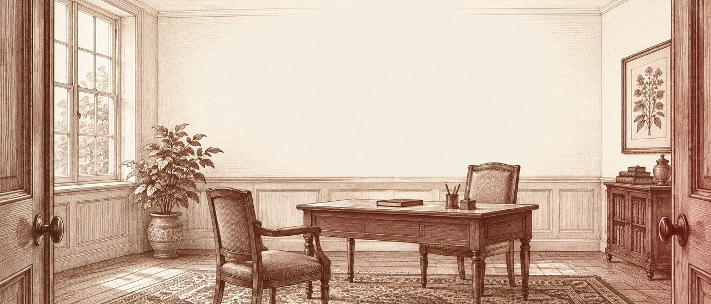
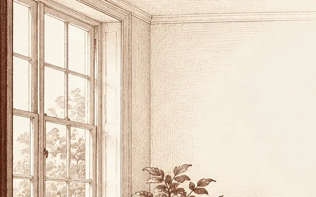
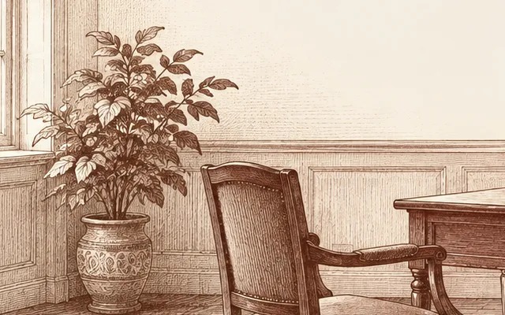
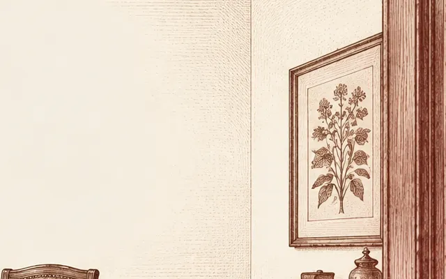
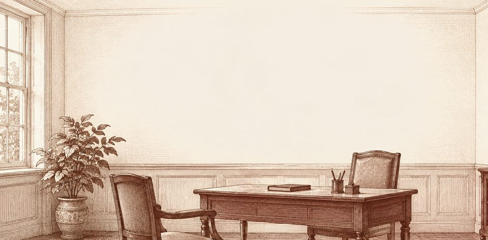

The AI scribe for UK general practice
Face the patient, not the screen.
Hush listens, with the patient’s consent, and drafts the note in your practice’s format. Nothing is saved until you approve it.

Consultation note
Presenting complaint
Cough, 3/52.
History
Dry cough since a cold three weeks ago, worse at night. No haemoptysis, no weight loss, no fever now. Sleeping poorly. Non-smoker. No asthma history.
Examination
Well. Chest clear, no wheeze. SpO2 98% RA. T 37.1 °C. Throat mildly red.
Impression
Post-viral cough.
Plan
Honey and warm drinks. No antibiotics indicated, explained why. Review in 3/52 if not settling.
Plate I The consulting room, from the door. Example note; the patient and NHS number are fictional.
Writes into the record
you already keep.
Placeholder until each integration is confirmed
- EMIS Web
- SystmOne
- Vision
- Accurx
Why Hush
Medicine has always run on careful notes. The trouble is who writes them: the doctor, typing, inside the ten minutes the patient came for. Hush takes the typing and leaves the judgement exactly where it was.
- You stay the author. Every line can be edited, and nothing saves without your approval.
- Consent comes first. Asked out loud, logged with the time, and “no” is always an easy answer.
- The audio doesn’t stay. It’s deleted the moment you approve the note.
From first word to signed note. Three steps inside one appointment.
Hush runs in a browser tab beside your clinical system. You see it twice: when you start, and when you sign.
-

I
The patient says yes
Consent is asked out loud and logged before anything is heard. If they say no, you type as you always have.
-

DrHow long has the cough been going?
PtThree weeks, maybe. It’s worse at night.
DrAny blood when you cough?
PtNo, nothing like that.
History
Cough 3/52, worse at night. No haemoptysis.
II
The talk becomes a note
Hush sets the small talk aside and files what matters under your template’s headings, in your abbreviations.
-

Plan · draft
Honey and warm drinks. Review in
2/523/52 if not settling.1 change by you
Edit Approve and saveSaved to record 10:47 · audio deletedIII
You sign it, or change it
Every word is yours to edit. Nothing reaches the record until you approve it, and you can always discard the draft.
For clinicians
Your format, not ours. Set once by the practice.
- Templates for face to face, telephone, home visits and long-term condition reviews
- British spelling and the shorthand you already use: 3/52, O/E, NAD, SpO2
- Codes are suggested beside the note, never added without you
- Copy into any clinical system in one click
Note format · Riverside Surgery
- Standard consult v3
- Telephone triage
- Asthma review
- Home visit
PCHxO/EImpPlanS/N
For practice managers
What happens to what is said. In plain words.
Hush is a fictional product. Every certification on this page is a placeholder and would need to be true and current before launch.
Consent log · Dr Ellery · Tue 14 Oct
- 08:40Face to faceAgreed
- 08:52TelephoneAgreed
- 09:02Face to faceAgreed
- 09:14Face to faceDeclined · typed
- 09:26Home visitAgreed
- 09:41Face to faceAgreed
- Consent
- Asked out loud at the start of every consultation and logged with the time. No consent, no listening.
- Audio
- Used to write the note, then deleted the moment you approve it. Never stored after that.
- Transcript
- Kept for 7 days so you can check the note against it, then deleted.
- Where
- Processed in the UK. Placeholder hosting provider and region
- Training
- Your consultations are never used to train models.
- Access
- The clinician who held the consultation, and audited practice admins. Nobody at Hush.
- DSPT Standards Met Placeholder
- DCB0129 clinical safety case Placeholder
- DCB0160 template for your practice Placeholder
- Cyber Essentials Plus Placeholder
- ICO registration Placeholder
- UKCA medical device status Placeholder
No testimonials yet. We’d rather show you a note than a quote.
Hush is in early access. Try it the way a careful practice would: small, supervised and easy to stop. Placeholder pilot terms
- Week 0
Paperwork first
DPIA template, DCB0160 template and data-processing agreement, before anything is installed.
- Week 1
Two clinicians, real lists
Hush on two machines. A consent card for reception, so patients know before they’re called.
- Weeks 2–3
Read every note
Compare drafts with what you’d have written. We review your edits with you each Friday.
- Week 4
Keep it, or don’t
Decide with your partners. Ask us to delete everything and it’s gone within 30 days.
Questions partners ask first.
Practice demos run Tuesdays and Thursdays, 13:00–14:00. Between surgeries.
Thirty minutes with your partners and practice manager. Bring a tricky consultation; we’ll show you the note.
Book a practice demoor write to practices@hush.example
What if the patient says no?
You press “They said no” and type as you always have. Nothing is heard or recorded, and the log notes the refusal without asking for a reason.
Does Hush make clinical decisions?
No. It writes down what was said and what you examined, under your headings. Suggested codes sit beside the note; only you add them.
Who is responsible for the note?
You are, exactly as now. That’s why nothing reaches the record until you’ve read and approved it.
Does it work for telephone and video consultations?
Yes. Consent is asked at the start of the call, and the note uses your telephone template.
Which clinical systems does it work with?
Any system you can paste into. Direct write-back to EMIS Web and SystmOne is planned. Placeholder integration status
What does it cost?
A monthly price per clinician, with no setup fee and no contract for the pilot. Placeholder pricing shared at the demo

Two chairs, one conversation.
Give the appointment back to the person in the other chair.
Book a practice demoPlate IV The same room, after the note has gone.